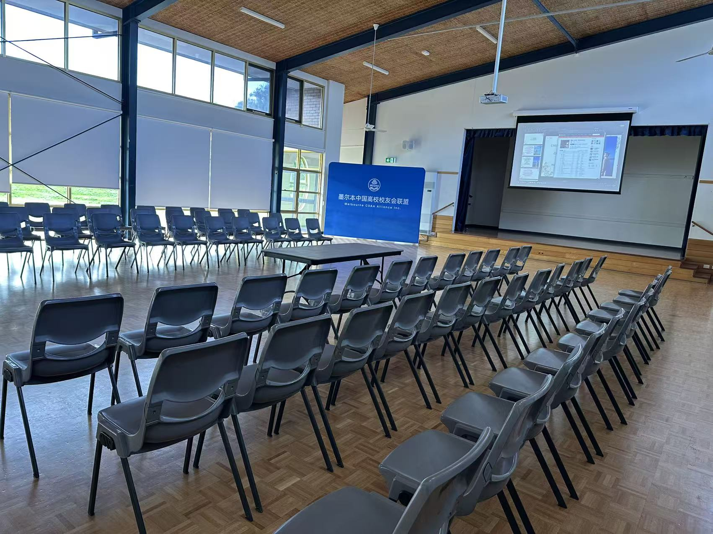

2026年8月8日，由墨尔本中国高校校友会联盟主办、墨尔本东南大学校友会承办、华中科技大学墨尔本校友会协办的第四届“缘来如此”单身联谊活动在墨尔本Mulgrave Community Center圆满举行。
此前，墨尔本东南大学校友会已连续三年成功举办“缘来如此”单身联谊活动，为在墨尔本生活的中国高校单身校友，以及校友的单身成年子女和亲属，搭建了一个轻松、真诚、开放的交流平台，创造了结识新朋友、拓展社交圈、增进彼此了解的宝贵机会。经过三年的持续耕耘与不断完善，“缘来如此”已逐渐发展成为墨尔本中国高校校友圈颇具影响力的品牌单身联谊活动。
本届活动获得了大家的热情响应，共有99人报名，64位单身人士来到现场参加活动。除了来自中国高校校友会的单身校友、校友的单身成年子女及亲属外，本届活动也向部分友好社团发出邀请，希望进一步拓宽参与者的交流圈，让大家有机会认识来自不同背景的新朋友。
为了让第一次见面的参与者能够更自然地打开话题、减少陌生感，活动设计了多个轻松有趣的互动环节。大家首先通过年龄段、来澳时间等方式进行破冰分组，在一次次重新组合中快速认识不同的朋友。

随后，每位参与者都有机会进行简短的自我介绍，并结合现场PPT展示个人基本资料。短短几十秒的介绍既让大家快速留下第一印象，也为之后进一步交流找到了话题和方向。
在接下来的分组交流环节中，参与者进行了多轮重新分组，并围绕不同话题展开讨论。不断变化的小组组合，让大家有机会与更多人面对面交流，也避免了活动变成少数熟人之间的固定聊天。现场气氛从最初的略显拘谨，逐渐变得轻松而热烈。
今年我们继续设置了颇受欢迎的“心动纸条”环节。每位参与者都可以将自己的个人介绍交给感兴趣、希望进一步了解的对象，由工作人员协助转交。这样的方式既保留了一份含蓄和尊重，也给彼此创造了进一步认识的机会。活动过程中，不时有人悄悄把写好的纸条交到工作人员手中，也成为现场一个温馨而有趣的小插曲。
下午的正式互动环节结束后，大家一边享用食物，一边自由交流。没有了流程和时间的限制，现场的聊天更加自然，不少参与者继续寻找之前交流中留下好印象的对象，有人交换联系方式，也有人通过工作人员进一步表达希望继续了解对方的意愿。

而最让工作人员开心的，是活动结束时看到一些真实而美好的故事已经悄悄开始。
当天活动接近尾声时，我们看到一对男女参与者牵着手，开开心心地一起离开了会场。当晚，又有朋友兴奋地打来电话报喜：她介绍来参加活动的一位朋友，在现场认识了一位感觉非常合适的男生。活动结束后，两人一起去吃了晚餐，男生送女生回家，并且当晚就约好了下一次见面的时间。朋友开心地说，希望以后有机会邀请我们一起吃饭，分享这份缘分带来的喜悦。
活动虽然在8月8日结束，但“缘来如此”的故事并没有就此结束。
在随后近两周的时间里，仍不断有参与者通过微信联系我们，希望工作人员帮助转达自己对某位参与者的兴趣，询问是否可以进一步交换资料或取得联系。活动现场短短几个小时的相识，在活动结束后继续延伸成一次次新的交流与联系。
我们一直认为，举办“缘来如此”的意义，并不是保证每一个来到现场的人都能马上找到另一半，而是希望创造一个真实、安全、自然、有温度的相识机会。也许一次见面只是认识一个新朋友，也许一次交谈会成为下一次见面的开始，而有时候，一张小小的“心动纸条”，真的可能成为一段缘分的起点。
今年活动组织工作由校友会会长王燕岚、副会长何灿及Julia Zhu统筹负责。在此，特别感谢东南大学墨尔本校友会和华中科技大学澳洲校友会义工团队的大力支持和辛勤付出。参与本次活动服务的义工有：王燕岚、何灿、Julia Zhu、王文燕、池莲花、张玲、徐鹏、范志良、黄堃、蒙虎、夏锋、Jessica Zheng、刘琳。他们以专业的组织能力、细致周到的服务和饱满的热情，在前台接待、现场协调、后勤保障等岗位默默坚守、通力协作，共同成就了这场精彩、温暖、圆满的校友联谊会。
从2023年第一届活动到2026年第四届，“缘来如此”能够一年一年延续下来，离不开各校友会、联盟成员、协办单位、工作人员和志愿者的支持，也感谢每一位参与者带着真诚和期待来到现场。
缘分或许无法安排，但我们可以创造相遇的机会。
期待下一届“缘来如此”，让更多人在墨尔本相遇、相识，也期待今年活动中已经悄悄萌芽的缘分，能够继续开花结果。
缘来如此，因为有缘，所以相遇。
文字：何灿
摄影：何灿
海报：王燕岚
编辑：范志良、何云爽